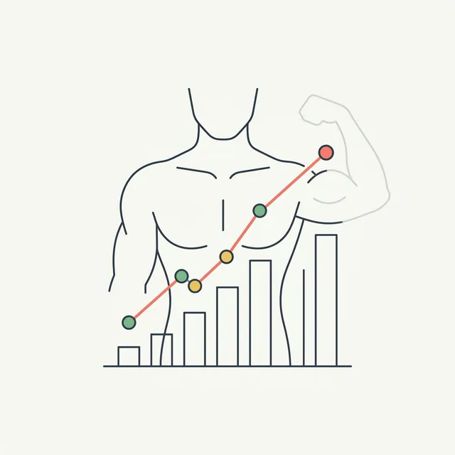

Best Apps to Track Muscle Gain (2026): Workout Logs + Visual Progress — Why You Need Both
Hevy tracks what you lift. That's not the same as tracking whether your body is actually changing. Here's how to close the gap.

Six months of Hevy logs. Every set, every rep, perfectly documented. You just hit a squat PR. Your bench is up 20 lbs. By every measure you can track, you're making progress.
But here's the uncomfortable truth: you have no idea if your physique has actually changed. You feel stronger. But do you look different? Has your body fat dropped? Are your shoulders visibly wider than they were in January? You genuinely can't tell.
This is the gap that every "best app to track muscle gain" article misses. They recommend workout loggers — Hevy, Strong, JEFIT. Those are excellent tools. But they track inputs, not outputs. They measure what you put into training, not what your body is doing in response to it.
Real muscle gain tracking requires two things: a record of what you're lifting, and visual evidence that your body is actually changing. One without the other leaves you flying blind on the most important variable.
Why most "muscle gain tracker" lists miss the point
Search "best app to track muscle gain" and you'll find the same apps in every result: Hevy, Strong, JEFIT, Fitbod. These are solid workout logging apps. We use some of them. They're genuinely good at what they do.
But what they do is track your workouts — not your body composition. Logging that you squatted 225 lbs for 3 sets of 8 tells you what you trained. It doesn't tell you whether your quads are growing, whether you're losing fat alongside the muscle you're building, or whether your physique is trending in the right direction.
You can hit every strength PR on your program and still be spinning your wheels on body composition. You can see the scale drop 10 lbs and lose mostly muscle if you're not eating enough. Without visual tracking, you're optimizing one input and ignoring the output it's supposed to produce.
The fix is simple: use both. A workout logger and a visual tracker. They're not competing — they're complementary. Here's what to use for each.
Layer 1: Best workout logging apps (track what you lift)
These apps do one thing extremely well: they record your training. Sets, reps, weight, volume, rest times, exercise progressions. If you want to know whether you're getting stronger — and stronger, over time, means you're probably building muscle — you need one of these.
Hevy — Best overall
Platform: iOS + Android | Price: Free with Pro tier
Hevy is the workout logger that the serious lifting community has converged on. The interface is fast and clean — logging a set takes two taps. It has a large built-in exercise library, tracks volume over time, shows your rep and weight PRs, and has a social feed if you want accountability or inspiration from other lifters.
The free tier covers everything most people need. The analytics on your volume and strength progressions are genuinely useful for program evaluation. It's the default pick for intermediate and advanced lifters who want reliable, no-friction workout tracking.
Best for: Anyone who lifts seriously and wants a clean, fast workout log with solid PR tracking and a strong community.
Strong — Best for minimalists
Platform: iOS + Android | Price: Free with Pro tier
Strong prioritizes speed. Open the app, start your workout, log your lifts. It's built around the assumption that you want to spend as little time in the app as possible — which is exactly right. The interface is stripped down. Rest timers are built in. It handles plateaus and weight suggestions with minimal configuration.
If your program is a simple 3–5 lift powerlifting or strength template, Strong covers everything you need without overhead. It's less social than Hevy and lighter on analytics, but for people who just want a reliable workout log, that's fine.
Best for: Powerlifters and strength athletes running programs with a small exercise selection who want the fastest possible logging experience.
JEFIT — Best for periodized hypertrophy programming
Platform: iOS + Android | Price: Free with Elite tier
JEFIT is more complex than Hevy or Strong, and that complexity is a feature if you're running a periodized hypertrophy program with multiple mesocycles. It has detailed planning tools, muscle group analytics, workout scheduling, and one of the largest exercise databases available. The analytics are more granular — you can break down volume by muscle group across weeks.
The tradeoff is that it takes longer to set up and the interface is denser. For beginners it's overkill. For intermediate and advanced lifters managing their own programming, it offers useful structure.
Best for: Intermediate to advanced lifters running periodized hypertrophy programs who want detailed volume tracking by muscle group.
Layer 2: Best visual progress tracking apps (track what your body looks like)
This is the layer most lifters skip — and it's the reason they can't answer the question "am I actually gaining muscle?" with any certainty. Visual trackers capture your body composition over time through photos, AI analysis, and measurements. They're the output layer that workout loggers can't provide.
GainFrame — Best for AI body composition tracking
Platform: iOS | Price: Free (25 photos lifetime) · Pro $5.99/mo or $39.99/yr
GainFrame is built specifically for the problem this post is about: closing the gap between what you're lifting and what your body is doing. You take a weekly check-in photo — a standard gym selfie works — and the app runs AI analysis via Google Gemini to give you body fat %, FFMI, and a GainFrame Score (0–100) that composites your overall physique into a single trackable number.
Every photo on your timeline is scored. So instead of guessing whether you're making progress, you have a monthly body fat trend, an FFMI trajectory, and a score that goes up as your physique improves. The numbers are estimated from photos, not direct measurement — but they're consistent and trackable, which is exactly what you need for progress monitoring.
The side-by-side compare feature is where GainFrame earns its keep for muscle gain tracking. You select any two photos and get a Smart Filter comparison that makes subtle changes visible — the kind of progress that's easy to dismiss when you see yourself every day in the mirror.

The muscle map is a standout feature for anyone serious about hypertrophy. GainFrame scores 12 individual muscle areas — front delts, side delts, upper chest, lower chest, biceps, triceps, abs, obliques, quads, and more — on a Needs Work through Elite scale. You get a visual heat map showing exactly which muscle groups are developing and which are lagging. This is the kind of feedback that used to require a coach and a trained eye.

Additional features worth noting: weight tracking, a Deep Dive AI report that runs an in-depth analysis of a single photo, a Future You projection that shows where your physique is trending at 3, 6, and 12 months, and Throwback comparisons that surface how far you've come. Photos are stored on-device via SwiftData and never persisted on GainFrame's servers. No account required.
Best for: Intermediate lifters who want to know whether their body composition is actually improving — not just whether their lifts are going up. Essential for anyone cutting, maintaining, or doing a body recomp where the scale is an unreliable signal.
Progress by Lasmit — Best for organized photo storage
Platform: iOS + Android | Price: Free with Pro subscription
Progress is a clean, well-designed app for organizing and comparing progress photos. It handles before-and-after comparisons, lets you add weight and measurement data, and sends consistent reminders so you don't skip check-ins. The interface is minimal and easy to use.
What it doesn't do: AI body composition analysis, body fat estimation, muscle group scoring, or anything beyond organizing photos and displaying them side by side. You're the analyst — the app is the storage system.
Best for: People who want a dedicated home for their progress photos, consistent reminders, and side-by-side comparisons without any AI analysis or body composition data.
Shapez — Best for measurement tracking
Platform: iOS + Android | Price: Free with subscription
Shapez focuses on body measurements alongside photos — waist, chest, arms, legs, and other circumferences tracked over time. If you're doing tape measure check-ins as part of your tracking protocol, Shapez gives you a clean system for entering and graphing those numbers alongside your photos.
There's no AI body composition analysis, but the measurement graphs are useful for detecting trends that photos alone might not capture — like arm circumference growing 0.5 inches over two months, which is a meaningful signal even if it's hard to see visually.
Best for: Lifters who do regular tape measurements and want a clean way to track inches alongside photos, without needing AI analysis.
The stack in practice: Hevy + GainFrame
Here's what the two-layer system looks like when it's running. You train, you log your lifts in Hevy. Once a week — Sunday morning works well — you take a check-in photo in GainFrame. If you've connected the Hevy integration inside GainFrame, your workout data from the same day automatically attaches to the photo. So every check-in shows not just what your body looked like, but what you trained that week. Over time you can see correlations: high-volume quad weeks showing up as quad development in the muscle map, or a deload week appearing as a flat-but-stable score.
At the end of the month, you pull up a side-by-side compare in GainFrame. If your body fat % is trending down and your GainFrame Score is trending up, your program is working. If your lifts are going up in Hevy but your score is flat and your body fat isn't moving, something is off — probably nutrition. The two-layer system gives you the data to actually diagnose the problem instead of just grinding more volume and hoping for the best.
Quick decision guide
| Your situation | What to use |
|---|---|
| You want to track your lifts, sets, and PRs | Hevy (or Strong for minimalists) |
| You want to know if your body is actually changing | GainFrame |
| You're doing a cut and need to track body fat trends | GainFrame — body fat % from weekly photos |
| You're running a hypertrophy program and need volume analytics | JEFIT for tracking + GainFrame to verify the muscle is showing up |
| You just want a photo album with reminders and no complexity | Progress by Lasmit |
| You do tape measurement check-ins alongside photos | Shapez for measurements + GainFrame for AI analysis |
The 3-step muscle gain tracking system
Most lifters overcomplicate this. Here's the actual framework:
- Log your lifts every session. Use Hevy, Strong, or JEFIT — whichever gets out of your way fastest. The goal is a consistent record of volume and progression. If you're not tracking sets and weight, you can't confirm progressive overload is happening.
- Do a visual check-in every week. One photo, same pose, same lighting. Run it through GainFrame. You don't need to obsess over every number — you're building a dataset. Three months of weekly check-ins gives you a clear trend line on body fat, FFMI, and physique score that no single reading can provide.
- Compare monthly, not daily. Pull a side-by-side in GainFrame at the end of each month. Look at the score trend, the body fat direction, and the muscle map for any lagging areas. Cross-reference with your Hevy volume data. If strength is up and the visual output reflects it, you're on track. If one is up and the other isn't, you've found your adjustment to make.
Workout logs tell you what you did. Visual tracking tells you what it produced. Use both, and you'll never again spend six months grinding through a program without being able to answer the question: am I actually building muscle?
Add the visual layer to your Hevy stack
GainFrame gives you body fat %, FFMI, a physique score, and per-muscle ratings from a weekly photo. Free to start — 25 photos, no account required. iOS only.
Download GainFrame Free